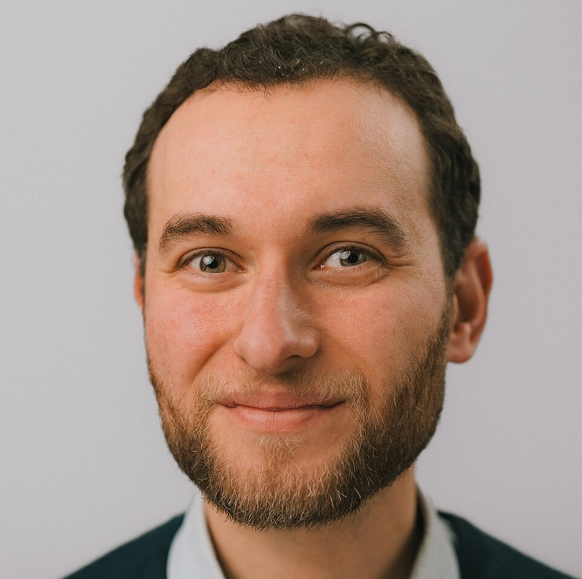

Digital Governance Researcher
🌍 Stockholm, Sweden
Email: anass@kth.se

You can find the PDF version of my complete CV here.
2025 – Present
Researcher, KTH Royal Institute of Technology - Stockholm
Vice-director of the SweWIN research center, and researcher in AI Governance.
2024 – 2025
Researcher, RISE - Research Institutes of Sweden
Researcher/project manager in several projects related to AI Governance and Ethics, partnering with both national and global actors.
2016 – 2022
Ph.D., INPT Rabat - Morocco
Ph.D. in computer science with focus on security and governance of Internet of Things (IoT).
2013 – 2017
B.Sc., Stockholm University - Sweden
Bachelor’s Degree majoring in Middle East and North Africa (MENA) studies, International Relations and Political Science.
2010 – 2012
M.Sc., KTH Royal Institute of Technology - Stockholm
Double degree studies in engineering (Civilingenjör). Communication Systems/ Networks/ Management.
2008 – 2012
M.Sc., Telecom ParisTech - France
Degree of Master of Science in engineering (Ingénieur d’état). Networks/ Project management/ Strategy/ IT.
2025 - Present
External Evaluator, European Commission
Subject matter expert evaluating grant applications for EU Research & Innovation Framework Programmes (Horizon Europe).
2022 - Present
AI Committee Voting Member, Swedish Institute for Standards (SIS)
Voting member at the SIS/TK 421 committee on Artificial Intelligence. Setting AI standards at national, European, and global levels and representative at international events and conferences.
2015 - Present
Board Member, Wikimedia Morocco
Co-founding member of the affiliate group of Wikimedia in Morocco. Leading a team of 6 employees to support and implement free knowledge programs in the country.
2024-2025
Member, Drafting Group for AI Act Code of Practice
Member of the drafting group for the AI Act Code of Practice launched by the AI Office (European Commission). The resulting Code of Practice details the AI Act rules for providers of general-purpose AI models, especially those with systemic risks.
2021-2024
Voting Member, Movement Charter Drafting Committee, Wikimedia
Selected among the 15 people worldwide writing the Wikimedia movement charter (global governance document).
2016 – 2022
Ph.D., INPT Rabat - Morocco
Ph.D. in computer science with focus on security and governance of Internet of Things (IoT).